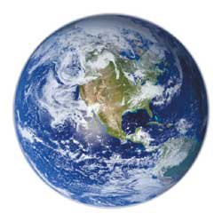
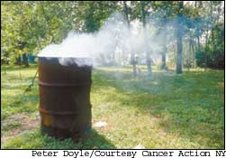

Congress, states address global warming.
The Kyoto treaty to reduce greenhouse gas emissions is helping draw attention to the problem of global warming, and efforts already are under way to address the issue in Congress and in many states despite the Bush administration’s inaction.
Although the United States is responsible for about 24 percent of the world’s carbon dioxide emissions, it is one of only four industrialized nations that did not sign the treaty. The others are Australia, Croatia and Monaco.
The Kyoto Protocol went into effect on Feb. 16, marking a major step in the worldwide effort to reduce greenhouse gas emissions, such as carbon dioxide and methane, which experts agree are contributing to global climate change. With the treaty in effect, 35 industrialized countries are now committed to reducing their greenhouse gas emissions by 2012.
A week before the Kyoto Protocol went into effect, Sen. John McCain, R-Ariz., and Sen. Joe Lieberman, D-Conn., reintroduced the Climate Stewardship Act, a plan to limit greenhouse gas emissions from industry, electricity generation and automobiles, by creating an emissions trading program.
“The evidence is clear that the problem is here, and that’s why we have to do something about it,” Lieberman said when introducing the bill. “Doing nothing is no longer an option.” Lieberman and McCain will hold public meetings across the country to raise awareness about the problem of climate change, according to Lieberman’s office.
Also in February, the Environmental Protection Agency launched the Clean Energy-Environment State Partnership Program, which helps states “to improve air quality, decrease energy use, reduce greenhouse gas emissions and enhance economic development.” The program kicked off in 11 states: California, Colorado, Connecticut, Georgia, Minnesota, New Jersey, New Mexico, New York, Ohio, Pennsylvania and Texas.
However, many states already have taken action, with California setting some of the toughest new standards. “The two biggest sources of greenhouse gases nationally are smokestacks and tailpipes,” says Jason Mark, director of the Union of Concerned Scientists’ Clean Vehicles Program. “California has the nation’s leading policies on both and the most aggressive renewable energy policy.”
California’s most ambitious policy to reduce greenhouse gases may be the state’s new auto emissions standards, which were released last fall. These standards will place new limits on greenhouse emissions that will take effect for model year 2009 cars and trucks, if the standards can survive a legal challenge from automobile manufacturers. (For more information on this case, go to www.ucsusa.org and search for “automakers v. the people.”)
California’s new emissions standards, however, already are making an impact nationally. According to Susan Brown, a senior policy analyst with the California Energy Commission, nine other states have expressed an interest in adopting the standards. Connecticut, Massachusetts and New York have publicly committed, and Oregon, Washington and others are exploring the possibility. “While individual states cannot combat global warming alone, by acting together, states can demonstrate global leadership on climate change and significantly reduce greenhouse gas emissions,” Brown says.
Many other states have come up with programs to combat climate change, from a no-till program in Georgia to reduce farmers’ fuel use, to a Wyoming plan for an emissions trading system. In addition, state governors have signed two regional plans: The West Coast Governors’ Global Warming Initiative launched by the governors of California, Oregon and Washington in 2003, and the 2001 Climate Change Action Plan developed for the Northeastern United States and eastern Canada. A list of state and national policies is available at www.climatechange.ca.gov/policies/national_summary.html.
Whether or not your state has a plan to address global climate change, you can make your voice heard on this issue by contacting your legislators. Find more information about the Climate Stewardship Act at www.nrdc.org/global warming/csa/csainx.asp.
“Strong support for these legislative bills is the best way to move the ball forward,” Mark says. “Politicians need to hear from voters.”
- Megan Phelps
• Burning of coal, oil and natural gas, and the destruction of forests around the world have increased carbon dioxide levels in our atmosphere by 30 percent since the late 1800s.
• The concentration of carbon dioxide is now higher than it has been in at least the last 400,000 years.
• Seventeen of the 18 warmest years in the 20th century occurred since 1980.
• Temperatures in recent decades have been higher than at any time in at least the past 1,000 years.
• Global sea levels rose 4 to 8 inches during the 20th century because ocean water expands as it warms and because melting glaciers are adding water to the oceans.
[SOURCE: National Assessment Synthesis Team, WWW.USGCRP.GOV]
Summer is vacation time, and what better way to spend it than by getting together to learn more about sustainable living, renewable energy and eco-consciousness; see performances by great musicians, dancers and speakers; and have some fun? There are more green festivals popping up across North America every year, and below are some of Mother’s favorite events.
To find other events in your area or to post a festival or workshop, go to www.MotherEarthNews.com/calendar.
Renewable Energy and Sustainable Living Fair June 17-19 Custer, Wis. www.the-mrea.org
The Renewable Energy and Sustainable Living Fair features hundreds of workshops, exhibits and displays on renewable energy systems and earth-friendly products. This year’s keynote speakers are Mother Earth News contributing editor Dan Chiras, David Bornstein and Diane Bady. The Fair has food, fun and activities for the whole family.
June 18-19
Westchester, N.Y.
www.clearwater.org/festival.html
On six stages powered with solar, wind or biodiesel energy, the Clearwater Festival features a mix of musicians. Its Green Living Expo is a celebration of environmental education and activism.
SolarFest, The New England Renewable Energy Festival
July 16-17
Tinmouth, Vt.
www.solarfest.org
Music, dance and theater on solar powered stages; educational workshops; renewable energy vendors and exhibitors; lots of children’s activities.
SolWest Fair
July 29-31
John Day, Ore.
www.solwest.org
Down-home renewable energy fair with dozens of free workshops and exhibitors. Electrathon rally highlights efficient, lightweight vehicle technology.
Southwest Sustainability Expo
Aug. 4-6
Flagstaff, Ariz.
www.sustainabilityexpo.com
Workshops on solar, wind and forest biomass energy; green building materials and design; alternative fuels and transportation. Also includes sustainability tours, a youth fair and more!
Illinois Renewable Energy Fair
Aug. 13-14
Oregon, Ill.
www.illinoisrenew.org
The fourth annual event features dozens of workshops, exhibits, music and Hunter Lovins as keynote speaker.
SolFest 2005
Aug. 20-21
Hopland, Calif.
www.solarliving.org/solfest2005.cfm
Organizers claim SolFest is the world’s largest solar- and wind-powered demonstration festival. Featuring inspirational workshops and a marketplace supporting 200-plus green vendors, the festival - now in its 10th year - attracts more than 10,000 attendees. This year’s speakers are Amy Goodman, Michael Ruppert, Richard Heinberg and Michael Toms.
Aug. 26-28
Fletcher, N.C.
www.seeexpo.com
More than 100 workshops and exhibitors. Also includes green building tours and Alternative Fuels and Clean Air Car Fair. Free children’s admission.
Rocky Mountain
Sustainable Living Fair
Sept. 17-18
Fort Collins, Colo.
www.sustainablelivingfair.org
A two-day event designed to educate people of all ages and backgrounds about sustainable living practices, renewable energy, natural health, alternative fuels and vehicles, organic agriculture and much more.
“Burn, barrel, burn” - it’s a tune some environmentalists refuse to sing. Instead, they’re rallying government officials to prohibit burning household waste in backyard barrels.espite scientific evidence that shows such burning can produce toxic dioxins, many rural communities across the United States continue to permit private waste incineration.
Federal law does not regulate barrel, or backyard burning, as it is sometimes called. Across the United States, uncontrolled barrel burning produces the “largest quantified source of dioxin emissions,” according to the Environmental Protection Agency (EPA). These dioxin emissions can lead to an increased risk of cancer, heart disease and reproductive and respiratory problems.
“You don’t have to be occupationally exposed or live near a toxic waste dump. It’s in your food,” says Chris Neurath, www.burnbarrel.org manager and activist in DeKalb, N.Y. “Dioxins from burn barrels end up making their way to all Americans, even if they live in the middle of New York City.”
Dioxins are a group of highly toxic chemicals formed when chlorinated materials are exposed to heat. They are classified as persistent, bioaccumulative and toxic pollutants (PBTs). PBTs are long-lasting substances that can build up in the food chain to levels that are harmful to human and ecosystem health.
Even when materials containing high levels of chlorine, such as PVC plastics, are removed from household trash, burning the waste still creates dioxins because nearly all household waste contains trace amounts of chlorine, the EPA says.
The dioxins created through backyard burning settle on plants. These plants in turn are eaten by meat and dairy animals, which store the dioxins in their fatty tissue. People are exposed to dioxins primarily by eating meat, fish or dairy products. According to the EPA, these harmful chemicals are difficult to avoid.
Some state legislatures already have heeded the EPA’s warnings about backyard burning. California and New Mexico, for example, banned the practice last year. In upstate New York, residents continue to wrangle over issues such as rights of the individual, money-saving advantages of backyard burning, community health and environmental concerns - as they decide whether to prohibit backyard burning.
barrel.org sponsored the second annual Tour de Burn Barrel, a four-day bike tour covering more than 200 miles of burn-barrel country in New York. The organizers pledged to return until the state legislature bans barrel burning.
Despite such campaigns, not everyone has joined the effort to eliminate backyard burning. But even households that continue backyard burning can do certain things to reduce the direct harms of this practice, such as recycling and buying products in bulk - habits that decrease the amount of trash to burn.
Still, legislation is the key to resolving this problem that affects everyone, Neurath says.
“Education without clear regulatory action will not be convincing to many people,” he says. “People are likely to say ‘open burning can’t be that bad if it’s legal and I see lots of others doing it.’ So, solving the problem of barrel burning will likely involve carrots, sticks and education.”
- Patrice R. Holderbach
Grants for Rural Businesses
The U.S.epartment of Agriculture is offering $11.4 million in grants for renewable energy systems and energy efficiency improvements by agricultural producers and rural small businesses. The grants cover technologies such as geothermal, solar and wind energy, as well as energy-efficiency improvements. Renewable energy grant applications must be for a minimum of $2,500 and a maximum of $500,000. Energy-efficiency grant applications may range from $2,500 to $250,000.eadline for applications is June 27. Visit www.rurdev.usda. gov/rd/nofas/2005/reeigp032805.html for more information.
Solar Investments Soar
2004 may be remembered as the “watershed year” for solar energy, and 2005 may be an even better year, according to a report by the Progressive Investor. In 2004, shares of the world’s 24 publicly traded solar companies jumped by nearly 185 percent. Experts say the solar photovoltaics (PV) market will grow from $7 billion to $30 billion by 2010. Solar PV, with its annual growth rate exceeding 30 percent, is about to become “one of the world’s fast-growth, profitable” industries, according to the newsletter. Among the companies mentioned are Japan’s Sharp, Germany’s SolarWorld and U.S.-based Evergreen Solar.
Sustainable Summer BBQ
Many summer activities such as family reunions and outdoor parties revolve around the backyard grill. You can green up these get-togethers by using organic, free-range and locally raised meat whenever possible. Iowa-based Wholesome Harvest is a coalition of 41 small, organic farmers that offers organic chicken and beef hot dogs, hamburger patties and chicken breasts. The company’s products are available in 15 states at both supermarkets and natural food stores. Visit www.wholesomeharvest.com for more information.
Except where noted, Green Gazette is written by Umut Newbury.
|
 |
|
 |